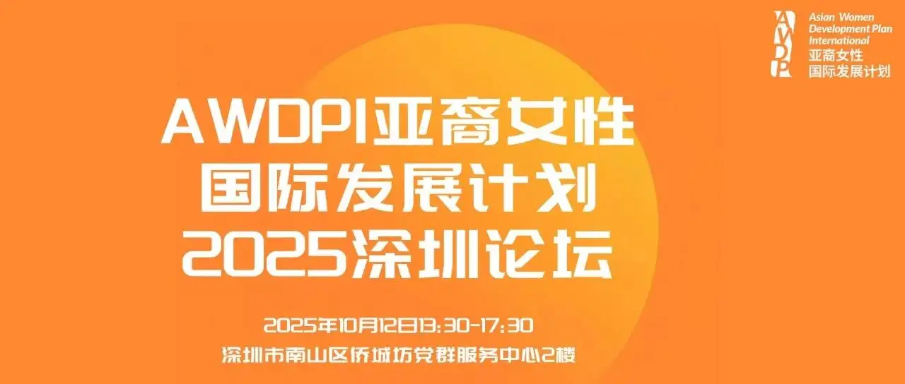

 感谢大家对原计划于10月12日13:30-17:30在南山区侨香路4080号侨城坊T8栋侨城坊党群服务中心2楼举办的“AWDPI亚裔女性国际发展计划2025深圳论坛”的支持与厚爱，在百忙之中拨冗出席本次活动。我们很抱歉地通知您， 本次活动因故需延期举行，具体时间和地点将另行通知，如给您造成任何不便，敬请谅解。欢迎您扫码下方图片添加小助手微信号，进入活动官方微信群，群内将及时发布活动最新动态，再次感谢您的支持与配合！ 撰稿｜Harry 排版｜池一诺